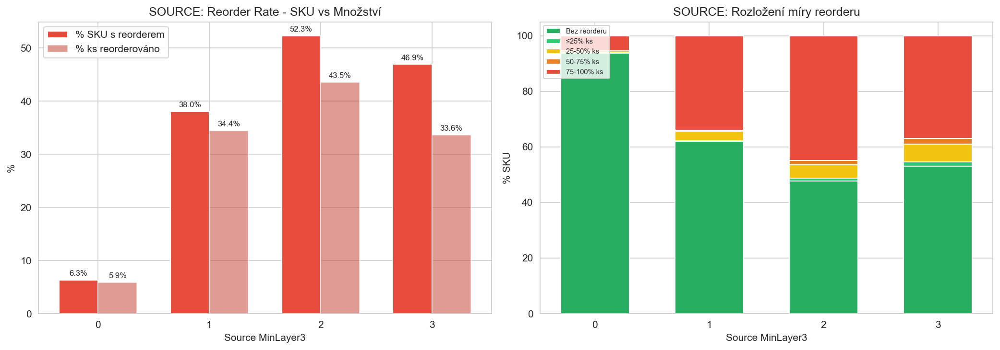
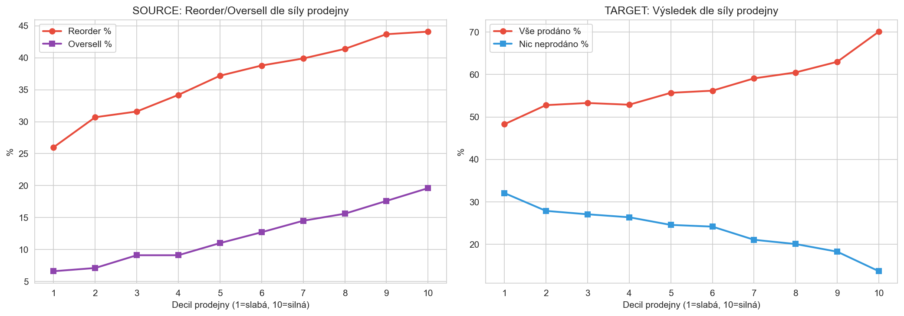
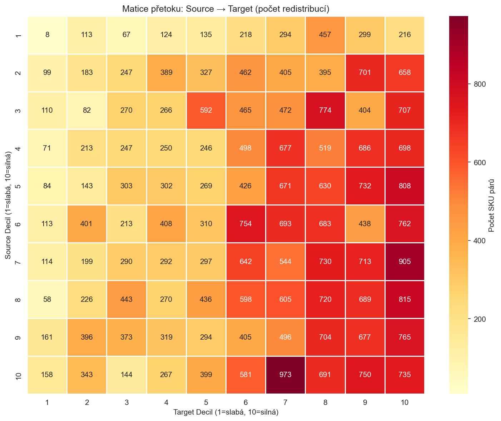
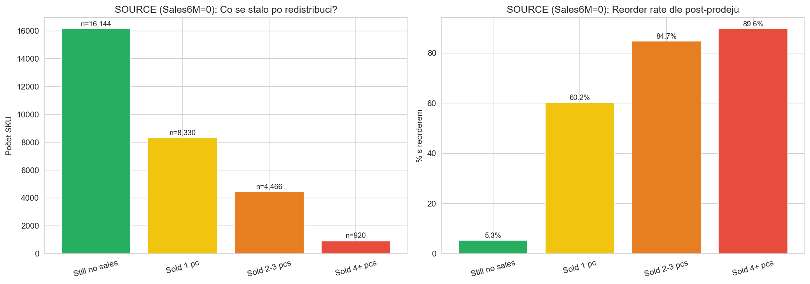
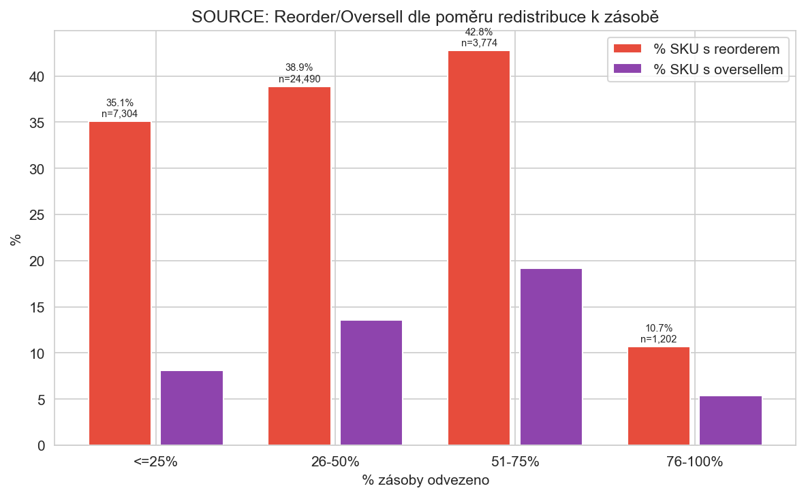

Kompletní analytika: SalesBased MinLayers
CalculationId=233 | Datum kalkulace: 2025-07-13 | Období: do 2026-03-22 | Vygenerováno: 2026-03-22 02:47
42,404
Redistribučních párů
36,770
Unikátních Source SKU
41,631
Unikátních Target SKU
48,754 ks
Celkem přesunuto
37.6%
Source SKU s reorderem
21.3%
Target nic neprodáno
1. SOURCE: Reorder & Oversell dle MinLayer3
Dvě dimenze: % SKU (kolik SKU mělo jakýkoliv reorder) vs. % kusů (kolik kusů z redistribuovaných se muselo reorderovat).

Klíčový nález: MinLayer3=2 má 52.3% SKU s reorderem, ale jen 43.5% kusů – reorder je často jen část.
MinLayer3=1 (hlavní skupina 32k SKU): 38% SKU, 34.4% kusů. Absolutně: 14k kusů z 41k se muselo doobjednat.
Rozložení míry reorderu: U MinLayer3=1, z 12k SKU co reorderovaly – 10,869 (89%) reorderovalo 75-100% redistribuovaného množství!
Tzn. když se reorderuje, reorderuje se skoro vše. Reorder je buď "celý" nebo žádný – málo částečných.
| MinLayer3 | SKU | Bez reorderu | Reorder ≤25% | Reorder 25-50% | Reorder 50-75% | Reorder 75-100% | Reorder ks | Redistrib. ks | Qty ratio |
|---|
| 0 | 1,709 |
1,602 | 2 |
11 | 1 |
93 |
121 | 2,061 |
5.9% |
| 1 | 31,965 |
19,828 | 53 |
1,101 | 114 |
10,869 |
13,978 | 40,598 |
34.4% |
| 2 | 2,680 |
1,278 | 27 |
133 | 39 |
1,203 |
2,052 | 4,716 |
43.5% |
| 3 | 416 |
221 | 6 |
27 | 8 |
154 |
464 | 1,379 |
33.6% |
2. Síla prodejny vs. výsledky redistribuce

Lineární závislost: Source reorder roste z 26% (slabé prodejny) na 44% (silné).
Silné prodejny prodávají víc → vyšší šance, že se odvezený produkt prodá → reorder. MinLayer musí zohledňovat sílu prodejny.
Target problém: Na silných prodejnách (decil 10) se 70% targetů prodá kompletně → spouštějí automatickou objednávku.
Na slabých (decil 1) se 32% neprodá vůbec. Redistribuce do slabých prodejen je rizikovější z hlediska "zaseknutí" zboží.
Matice přetoku: Source → Target (odkud kam posíláme)

Zjištění: Redistribuce jde primárně zleva doprava a shora dolů – ze slabších do silnějších.
Nejvíc redistribucí: decily 7-10 source → decily 7-10 target. To znamená přesuny mezi silnými prodejnami, kde je vysoká šance prodeje na obou stranách.
3. Sporadičtí prodejci (Sales6M_Pre = 0)
29,860 source SKU (81%) nemělo žádný prodej za 6 měsíců před redistribucí.

54% (16k) zůstalo bez prodejů i po redistribuci – správně identifikované přebytky.
28% (8.3k) prodalo přesně 1 kus → 60% z nich mělo reorder. Jeden prodej = skoro jistý reorder.
18% (5.4k) prodalo 2+ kusů → 85-90% reorder. Tyto SKU jsou "spící prodejci" a MinLayer je podcenilo.
| Co se stalo po redistribuci | SKU | % ze zero-sellers | S reorderem | % s reorderem | Reorder ks | Redistrib. ks |
|---|
| Still no sales | 16,144 |
54.1% | 859 |
5.3% |
928 | 19,363 |
| Sold 1 pc | 8,330 |
27.9% | 5,014 |
60.2% |
5,230 | 10,563 |
| Sold 2-3 pcs | 4,466 |
15.0% | 3,784 |
84.7% |
4,569 | 5,849 |
| Sold 4+ pcs | 920 |
3.1% | 824 |
89.6% |
1,151 | 1,362 |
4. Poměr redistribuce k zásobě
Kolik procent zásoby jsme ze source odvezli?

Paradox 76-100%: Když odvezeme skoro vše (76-100%), reorder je jen 10.7%! Proč? Protože to jsou SKU s vysokou zásobou a minimálním prodejem – proto se odveze většina. Naopak 51-75% odvezení má nejvyšší reorder (42.8%) – to jsou SKU kde odvážíme hodně, ale ne vše → zbylá zásoba nestačí.
| % zásoby odvezeno | SKU | % SKU s reorderem | Reorder qty ratio | % SKU s oversellem |
|---|
| <=25% | 7,304 |
35.1% |
32.8% | 8.1% |
| 26-50% | 24,490 |
38.9% |
36.8% | 13.6% |
| 51-75% | 3,774 |
42.8% |
31.4% | 19.2% |
| 76-100% | 1,202 |
10.7% |
11.4% | 5.4% |
5. Vliv změny SkuClass (delisting)
SkuClass hodnoty: A-O(9)=Active Orderable, Z-O(11)=Z Orderable, D(3)=Delisted Douglas, L(4)=Delisted supplier
Delisting dramaticky snižuje reorder! Source SKU, která zůstala aktivní: 42.7% reorder (39.4% qty).
Delistovaná po redistribuci: jen 13.2% reorder (10.9% qty). Delisting = výrazně méně problémů.
6,047 source SKU (16.4%) bylo delistováno po redistribuci.
| Změna SkuClass | Source SKU | % SKU reorder | Qty reorder ratio | Reorder ks | Redistrib. ks |
|---|
| Stayed Active/Z | 30,505 |
42.7% | 39.4% |
15,628 | 39,635 |
| Delisted after | 6,047 |
13.2% | 10.9% |
969 | 8,854 |
| Already delisted | 218 |
7.3% | 6.8% |
18 | 265 |
Target – vliv delistingu
Target delistovaná po redistribuci: 24.5% nic neprodáno (vs. 20.7% u aktivních). Rozdíl není dramatický – delisting u targetu neznamená automaticky "nic neprodáno".
Ale 61.8% all-sold u delistovaných – vyšší než u aktivních (59.3%)! Možné vysvětlení: delistované produkty se vyprodávají (clearance).
6. Cenová analýza
| Cenové pásmo | Source SKU | Source % reorder | Source qty ratio | Target SKU | Target % nic | Target % vše |
|---|
| <15 EUR | 63 |
55.6% | 36.5% |
66 | 1.5% | 80.3% |
| 15-30 | 1,178 |
36.2% | 28.8% |
1,202 | 16.1% | 64.0% |
| 30-60 | 16,728 |
34.8% | 31.7% |
18,247 | 25.1% | 55.4% |
| 60+ EUR | 18,801 |
40.2% | 36.7% |
22,116 | 18.5% | 63.0% |
Cenový vliv je mírný. Levné (<15 EUR): 55.6% reorder, ale jen 63 SKU – malý vzorek.
Drahé (60+ EUR): 40.2% reorder vs 30-60 EUR s 34.8%. Drahé produkty mají mírně vyšší reorder.
Target: levné se téměř vždy prodají (80.3% all-sold), drahé méně (63%). U 30-60 EUR je nejvyšší "nic neprodáno" (25.1%).
7. Trend produktu (cross-product analýza)
Porovnání prodejů produktu 6M před redistribucí vs. 6M ještě před tím – je produkt na vzestupu nebo sestupu?
| Trend produktu | Produktů | Source % reorder | Target % all-sold |
|---|
| Declining (>50%) | 416 |
31.3% | 65.2% |
| Slightly declining | 2,527 |
39.3% | 58.3% |
| Stable | 935 |
35.9% | 58.7% |
| Slightly growing | 574 |
36.4% | 55.3% |
| Growing (>50%) | 700 |
39.6% | 62.2% |
Klesající produkty mají nejnižší reorder (31.3%) ale nejvyšší target all-sold (65.2%)!
Paradox: u klesajících produktů odesíláme přebytky (málo reorderu), ale target je prodá (protože dostal zboží co potřeboval).
Rostoucí produkty: 39.6% reorder – odvážíme ze source, ale source potřebuje (roste poptávka).
8. Stockout analýza
| Dny ve stockoutu (6M před) | SKU | % s reorderem | Qty reorder ratio |
|---|
| 0 days | 33,239 |
37.3% | 33.6% |
| 1-30 days | 3,034 |
39.7% | 38.2% |
| 31-90 days | 393 |
45.5% | 42.0% |
| 91-150 days | 97 |
53.6% | 52.5% |
| 150+ days | 7 |
42.9% | 50.0% |
Dlouhý stockout → vyšší reorder: 0 dní stockoutu: 37.3% reorder. 91-150 dní: 53.6%.
SKU, která byla delší dobu bez zásoby, mají tendenci k vyššímu reorderu po redistribuci – indikátor phantom stocku nebo sporadického prodejce.
Ale pozor: jen 497 SKU (1.4%) mělo 31+ dní stockoutu – malý vliv na celkové čísla.
9. Časové rozložení reorderů
| Období reorderu | SKU | % ze všech source | Reorder ks | Redistrib. ks | Qty ratio |
|---|
| First 4M | 7,160 |
19.5% | 8,856 | 9,766 |
90.7% |
| Xmas (Nov-Dec) | 2,569 |
7.0% | 3,122 | 3,516 |
88.8% |
| 2026+ | 4,112 |
11.2% | 4,637 | 5,533 |
83.8% |
| No reorder | 22,929 |
62.4% | 0 | 29,939 |
0.0% |
62.4% reorderů nemá reorder vůbec (22,929 SKU). To je dobrá zpráva – většina redistribucí funguje.
19.5% (7,160 SKU) reorderuje do 4 měsíců – nejkritičtější skupina. Qty ratio 90.7% – skoro vše se musí doobjednat.
7.0% (2,569) reorderuje v Xmas – sezónní efekt.
11.2% (4,112) reorderuje po novém roce 2026.
10. Typy příjmů (inbound) po redistribuci
| Typ | SKU | Celkem ks | Do 4M ks | Po 4M ks |
|---|
| PURCHASE | 11,055 |
23,413 | 9,568 | 13,845 |
| STORE TRANSFER | 3,057 |
4,249 | 247 | 4,002 |
| Y-STORE TRANSFER | 3,117 |
4,054 | 1,360 | 2,694 |
| INVENTORY_CHECK | 867 |
630 | 472 | 158 |
| ADJUSTMENT | 63 |
41 | 7 | 34 |
72.2% reorderů je PURCHASE (23,413 ks) – skutečná objednávka od dodavatele. To je hlavní problém.
Y-STORE TRANSFER (4,054 ks) = další redistribuce Ydistri → zboží se posílá znovu!
STORE TRANSFER (4,249 ks) = interní přesuny Douglas → nezávislé na Ydistri.
Souhrnné závěry a doporučení
Hlavní problémy MinLayer heuristiky:
- MinLayer nerespektuje sílu prodejny. Silné prodejny (decil 8-10) mají 41-44% reorder na source a 60-70% all-sold na target. Potřebují vyšší MinLayer na source a cílený nižší příjem na target.
- "Sporadičtí prodejci" (81% source SKU) tvoří jádro problému. Z 30k zero-sellers: 54% správně odvezeno (bez prodejů), ale 46% mělo alespoň 1 prodej → 60-90% reorder. Jednobitová predikce (prodával/neprodával za 6M) nestačí.
- Reorder je "all or nothing". 89% reorderů je v pásmu 75-100% redistribuovaného množství. Částečné reordery jsou vzácné. → Pokud se prodá 1 kus, doplní se vše.
- Target prodá příliš rychle. 60% targetů prodá vše → spouští automatickou objednávku. MinLayer na target musí zajistit, aby zůstal alespoň 1 kus.
- Delisting pomáhá statistice. 16% source SKU bylo delistováno → jen 13% reorder (vs. 43% u aktivních). Bez delistovaných by source reorder byl ještě horší.
Doporučení pro pravidla MinLayer:
- Zohlednit sílu prodejny – source MinLayer +1 pro silné prodejny (decil 8+), target MinLayer -1 pro slabé (decil 1-3).
- Rozšířit frekvenci na 12M – 6M okno je příliš krátké pro sporadické prodejce. Produkt s 2 prodeji za 12M je jiný než s 0.
- Zohlednit trend produktu – rostoucí produkty potřebují vyšší source MinLayer.
- Cenové pásmo – levné produkty (<30 EUR) se prodají téměř vždy, drahé (60+) mají vyšší reorder.
- Brand-store fit – nemáme dosud analyzováno, bude ve fázi 3 rozšířené analýzy.
Generováno: 2026-03-22 02:47 | CalculationId=233 | EntityListId=3